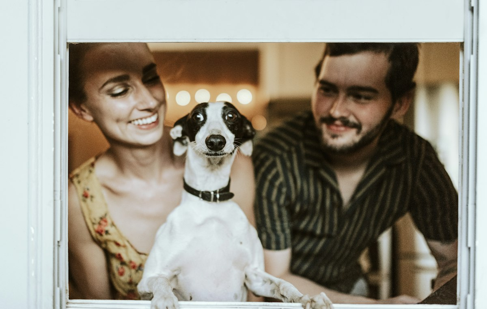
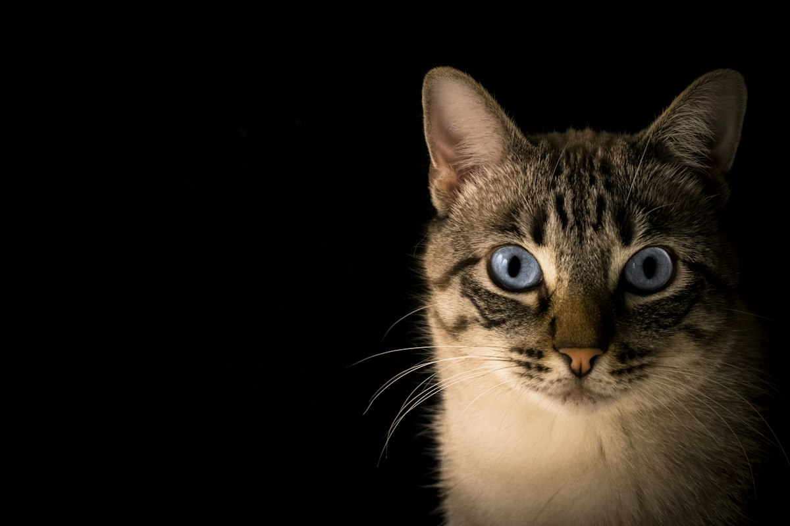

Missão
Resgatar, cuidar e encaminhar cães e gatos para lares seguros, promovendo adoção responsável e bem-estar animal.
Quem somos
O Patas Unidas é uma organização fictícia de proteção animal, criada para um trabalho acadêmico. O site mostra como funcionam o acolhimento, a transparência e a adoção responsável.

Nossa história
Em 2019, um grupo de voluntários encontrou uma cadela e seus filhotes abandonados em um terreno na zona sul de São Paulo. O mutirão de cuidado virou uma organização que resgata, reabilita e encaminha animais para novas famílias.
Desde então, o Patas Unidas construiu uma rede com clínicas veterinárias parceiras, lares temporários e voluntários que atuam em resgates, feiras, transporte, comunicação e acompanhamento pós-adoção.
Ouvimos os animais, as famílias e as comunidades antes de decidir. Adoção responsável depende de muita gente, não só de quem adota.

Nossos princípios
Resgatar, cuidar e encaminhar cães e gatos para lares seguros, promovendo adoção responsável e bem-estar animal.
Uma cidade em que nenhum animal abandonado fique sem cuidado e em que toda adoção seja uma escolha consciente e acompanhada.
Respeito à vida, transparência, responsabilidade, empatia, trabalho em rede e compromisso com o bem-estar de cada animal.
Indicadores de impacto
Revisamos os indicadores de tempos em tempos e publicamos os números para que os apoiadores vejam como o trabalho avança.
Nossa equipe
Uma equipe pequena, com apoio de muitos voluntários, clínicas parceiras e famílias temporárias.


Nossas ações
Resgates, consultas, castrações, feiras de adoção, campanhas de arrecadação e visitas de acompanhamento fazem parte da rotina. Também realizamos ações educativas em escolas e espaços comunitários.
Nosso compromisso
Nenhum animal é disponibilizado para adoção sem avaliação veterinária e sem um processo de triagem da família. Também não realizamos doações de animais como brinde, não separamos filhotes antes do tempo adequado e não incentivamos adoções por impulso.
Quando uma adoção não se adapta, recebemos a família e o animal de volta, sem julgamentos. O bem-estar vem antes da pressa.